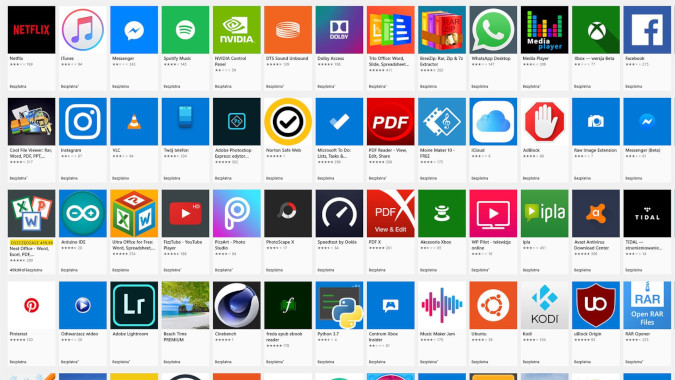

Czym są aplikacje desktopowe i mobilne
Aplikacja desktopowa (czasami nazywane też okienkowe) to inaczej programy, które instaluje się bezpośrednio na telefonie, komputerze lub laptopie użytkownika. W przeciwieństwie do aplikacji webowych działają one bez konieczności połączenia z Internetem.
Aplikacja mobilna. Pod tą nazwą kryją się wszystkie rodzaje oprogramowania działającego na urządzeniach przenośnych, a więc przystosowane do używania na telefonach komórkowych, smartfonach czy tabletach. Aplikacje mobilne tworzone są pod dwa główne mobilne systemy operacyjne: iOS i Android.
Do czego służą aplikacje desktopowe i mobilne
Aplikacje desktopowe są zazwyczaj wykorzystywane do wykonywania określonych zadań, takich jak tworzenie dokumentów, przeglądanie stron internetowych, przetwarzanie danych lub edycja grafiki.
Aplikacja mobilna, często jej zadaniem jest rozszerzenie funkcji smartfona czy tabletu (np. krokomierz, kalendarz, narzędzie do przerabiania zdjęć), ale może również stanowić substytut mobilnej strony internetowej (np. bankowość mobilna, aplikacje m-commerce, social media).
Najlepsze narzędzia do tworzenia aplikacji desktopowych
Przykładowe aplikacje desktopowe oraz mobilne
Zalety aplikacji desktopowych
Szybkość działania aplikacje okienkowe oferują największą szybkość działania i responsywność.
Wygoda obsługi i znajomy interfejs praktycznie każdy użytkownik zna interfejs Windows i jego elementy: okienka, przyciski, menu itd. Powoduje to, że czas nauki obsługi aplikacji jest relatywnie krótki.
Możliwość współpracy z drukarką i urządzeniami zewnętrznymi aplikacje desktopowe oferują natychmiastowy podgląd wydruku i wydruki bezpośrednio na drukarkę, bez konieczności pośredniego generowania pliku PDF. Mogą także komunikować się z innymi urządzeniami, np. ze skanerem.
Wystarczy tylko komputer ponieważ aplikacja desktopowe jest zainstalowana bezpośrednio na komputerze - nie potrzebuje do swojego działania żadnego innego komputera czy serwera (oczywiście nie mówimy tutaj o architekturze klient-serwer).
Możliwość ograniczenia miejsca korzystania paradoksalnie, czasem może Ci zależeć na tym, aby dany program był dostępny tylko z określonych komputerów, stojących w określonych miejscach (np. tylko w biurze). Niekiedy to, że aplikacja jest dostępna tylko z komputera na którym ją zainstalowano - jest zaletą.
Wady aplikacji okienkowych
Określone wymagania co do komputera aby aplikacja działała, komputer musi posiadać pewne minimalne parametry. Musi mieć odpowiednią wersję Windows, wystarczającą ilość pamięci, miejsca na twardym dysku itd.
Konieczność instalacji aplikacja desktopowa musi zostać zainstalowana. Oznacza to, że jeśli np. popsuje się komputer i chcesz używać innego - musisz go najpierw przygotować (zainstalować aplikację).
Problemy z administracją (wersje, użytkownicy, komputery) konieczność instalacji, a także aktualizacji na wszystkich komputerach powoduje że zarządzanie aplikacją okienkową jest bardziej pracochłonne niż w np. w przypadku aplikacji webowych.
Zastosowanie aplikacji internetowych i mobilnych
Przykładem zastosowania aplikacji desktopowej może być program do wystawiania faktur, oprogramowanie do zarządzania środkami transportu. Aplikacja desktopowa jest też dobrym wyjściem dla osób, które nie chcą udostępniach swoich danych (np. w serwisach cloud) - a wszystkie dane chcą przechowować lokalnie na swoim komputerze. Ma to swoje plusy i minusy.
Najpopularniejsze aplikacje mobilne
Najpopularniejsze w tej kategorii są Snapchat, Facebook, Instagram, Tumblr, Twitter. Messenger, WhatsApp, Vine. Aplikacje typu Instagram czy Pinterest skupiają się wokół potrzeb kreatywno-estetycznych. Aplikacje finansowe.